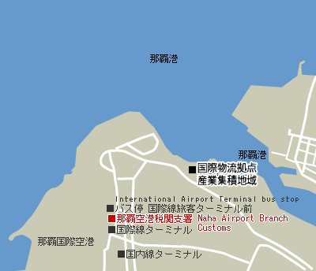
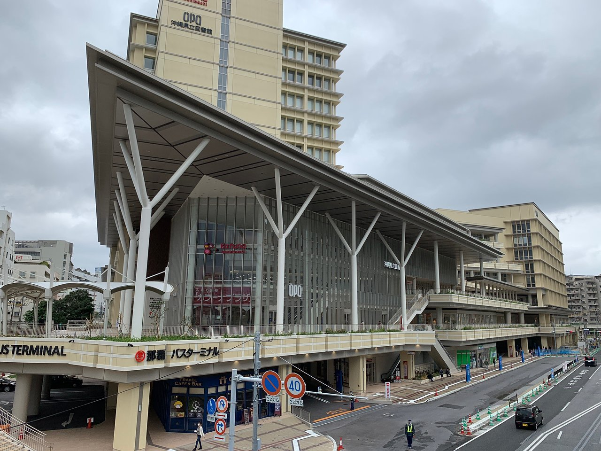

Aquí es donde comienzan la mayoría de las aventuras en Okinawa. El aeropuerto de Naha es la puerta de entrada a todas las islas de Okinawa. A este aeropuerto nacional llegan aviones de decenas de lugares de todo Japón, incluyendo líneas de bajo coste
perfectas para viajeros con un presupuesto ajustado. La ciudad de Naha se encuentra a solo 10 minutos en coche del aeropuerto, o a un par de paradas en monorraíl.

Terminal Mae
La terminal Mae se encuentra dentro del aeropuerto y su acceso es la siguiente dirección: Nahakukokokusaisenterminalbirunai 280 Kagamizu Naha-shi Okinawa 901-0142

Transporte
- Avión: Los principales aeropuertos de Japón se encuentran a las afueras de las grandes ciudades de Tokio y Osaka. El aeropuerto de Narita se encuentra a una hora en tren rápido desde Tokio, en la prefectura vecina de Chiba.
El aeropuerto, que presta servicio a la mayoría de los destinos internacionales y cuenta con una amplia gama de vuelos nacionales, se conoce merecidamente como la puerta de entrada a Japón. Para obtener más informacion
sobre este aeropuerto, haz clic aquí: Aeropuerto de Narita: sitio web del aeropuerto Volar directamente a la metrópolis desde cualquier parte del mundo se ha convertido en una realidad gracias al desarrollo de Haneda, el
aeropuerto de la ciudad de Tokio. El aeropuerto de Haneda , que en su día solo operaba vuelos nacionales, se ha convertido en un aeropuerto internacional que ofrece a los viajeros la posibilidad de llegar al centro de Tokio
en tan solo media hora desde la terminal. Para obtener más información, haz clic aquí: Aeropuerto de Haneda: sitio web del aeropuerto Lo que antes era algo inconcebible, ahora es posible: visitar Japón sin poner un pie
en Tokio. El aeropuerto internacional de Kansai (KIX) presta servicio a la zona occidental de Japón, donde se encuentan las ciudades turísticas de Kioto y Osaka, además de los territorios espirituales de las prefecturas
vecinas de Nara y Wakayama . El aeropuerto está situado a unos 50 minutos de la estación del tren bala de Shin-Osaka y a una hora y cuarto de la estación de Kioto . Para obtener más información, haz clic aquí: Aeropuerto
Internacional de Kansai: sitio web del aeropuerto Japón dispone de un sinnúmero de opciones aeroportuarias a lo largo del país que reciben tanto vuelos nacionales como internacionales, desde la gran isla blanca de Hokkaido
en el norte hasta la industrial Nagoya en el centro y la Okinawa subtropical del sur. Cuando planifiques tu viaje, averigua qué aeropuertos te permiten visitar Japón con la mayor comodidad.
- Barco: También es posible arribar a Japón en barco. La zona meridional de Corea del Sur se halla muy cerca del archipiélago japonés y existen ferris de pasajeros regulares entre la ciudad coreana de Busan y la terminal de ferris
de Hakata (en la isla de Kyushu), la terminal de Shimonoseki Kokusai (en el sur de la isla principal de Japón) y la terminal internacional de ferris del puerto de Osaka, en el oeste de Japón. El precio del billete depende
de la duración del viaje. Los ferris de alta velocidad de Hakata a Busan tardan 3 horas y el billete cuesta unos 13 000 yenes. Por otro lado, un viaje a Osaka en el Kampu Ferry es más tranquilo y el precio no supera los
10 000 yenes, pero tarda 12 horas. Si por casualidad quisieras hacer una visita al gran país vecino de China desde Japón, puedes tomar un ferri y desembarcar en la tierra del sol naciente en unos tres días. Hay ferris con
una frecuencia semanal desde Shanghai a Osaka y Kobe, en el oeste de Japón, y a Nagasaki y Fukuoka , en la isla del sur.
Conoce el Aeropuerto de Naha
Para muchos, Japón era un destino muy atractivo, pero muy lejos de su alcance: las deslumbrantes luces de neón, la robótica de alta tecnología, el misterio de las geishas y las pequeñas aldeas samurai solo se quedaron en un sueño
No te pierdas...
- El recientemente restaurado castillo de Shur
- Kokusai-dori, la principal calle comercial y de entretenimiento de Naha
- El santuario Naminouegu, dedicado al origen de la vida según la mitología de Okinawa
Tiendas de primera
En las tiendas del NRT encontrarás artículos para el viaje, así como refrigerios, souvenirs y otros objetos divertidos. Cuenta con tiendas de electrónica, artesanía japonesa, anime y manga, además de librerías, tiendas de comestibles,
moda de marcas reconocidas como Uniqlo, Birkenstock, Muji To Go, Hello Kitty Japan, Cath Kidston o Samantha Vega, entre otras.
Date un capricho dulce
El aeropuerto internacional de Narita cuenta con una gran variedad de artículos y es un lugar excelente para comprar recuerdos de camino a casa. Entre los artículos más populares están los Kit Kat y Pocky de té verde, bombones
y pasteles, té, toallas de mano, muñecas tradicionales, abanicos japoneses u objetos de personajes como Hello Kitty y Poké
Descubre la cultura japonesa
Si bien todos los aeropuertos cuentan con establecimientos de comida, tiendas y zonas de descanso, el aeropuerto internacional de Narita también ofrece la posibilidad de sumergirse en la tradicional cultura japonesa. Kabuki Gate
es un espacio dentro del aeropuerto en el que se ofrecen eventos gratuitos durante todo el año, como demostraciones de ceremonias del té o de caligrafía, o actuaciones musicales. También cuenta con exposiciones de trajes tradicionales
kabuki y otros objetos culturales durante todo el año.